Fecha de última actualización: 2018-02-27
Número de pacientes a la fecha: 1033
Datos ginecologicos
Edad
Tabla de Resumen
| Media |
35.3 |
| Desviación estándar |
12.3 |
| Mediana |
33 |
| Rango intercuartilo |
16 |
| Mínimo |
16 |
| Máximo |
76 |
 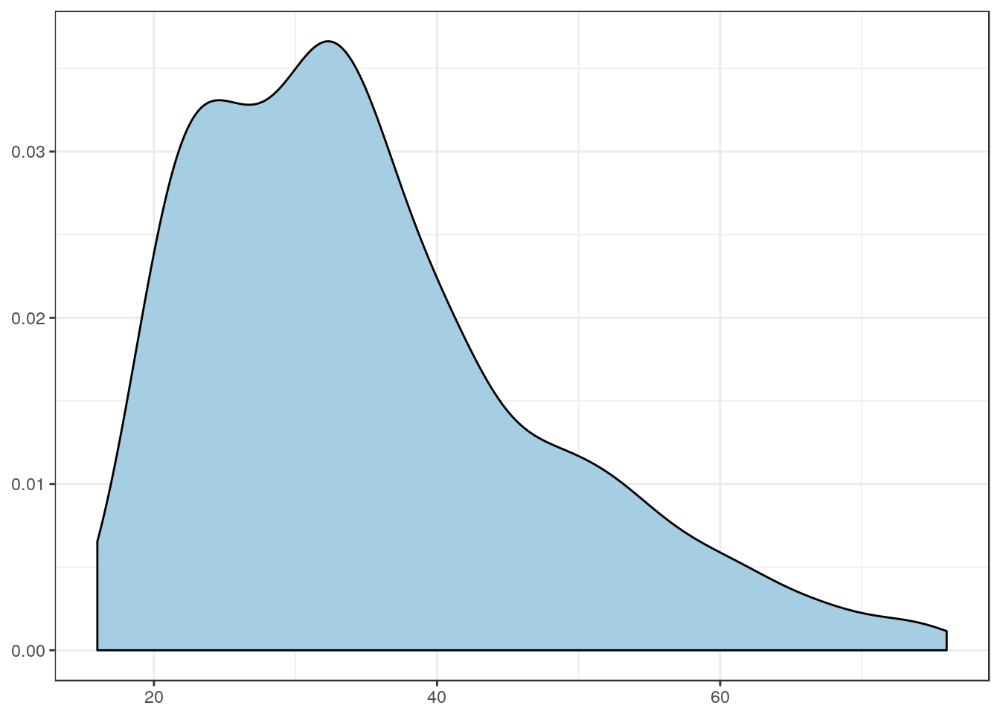
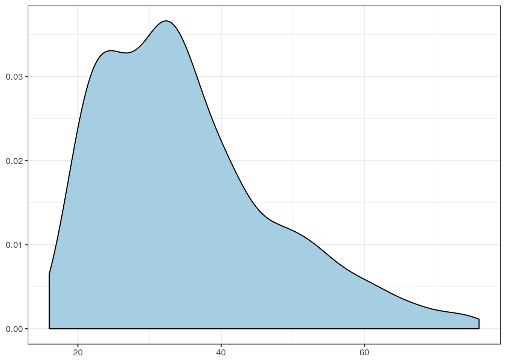
Menarca
Tabla de Resumen
| Media |
13.1 |
| Desviación estándar |
1.8 |
| Mediana |
13 |
| Rango intercuartilo |
2 |
| Mínimo |
8 |
| Máximo |
29 |
Tipo menstrual
Tabla de Resumen
| Regular |
591 (58) |
| Irregular |
281 (27) |
| Post menopausia |
154 (15) |
Embarazo previo
Tabla de Resumen
| No |
540 (52) |
| Sí |
493 (48) |
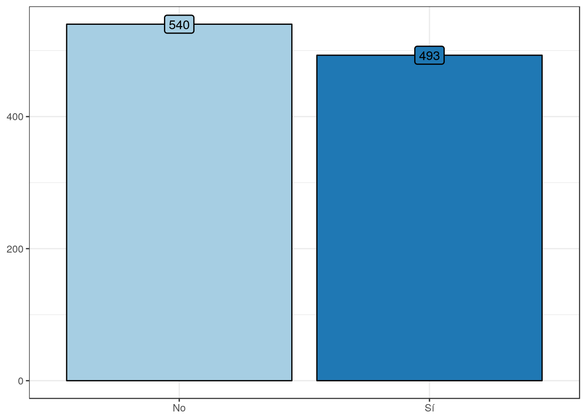
Numero de embarazos previos (en pacientes embarazadas)
Tabla de Resumen
| Media |
2.6 |
| Desviación estándar |
1.7 |
| Mediana |
2 |
| Rango intercuartilo |
2 |
| Mínimo |
1 |
| Máximo |
10 |

Uso de anticonceptivos
Tabla de Resumen
| No |
552 (54) |
| Sí |
479 (46) |
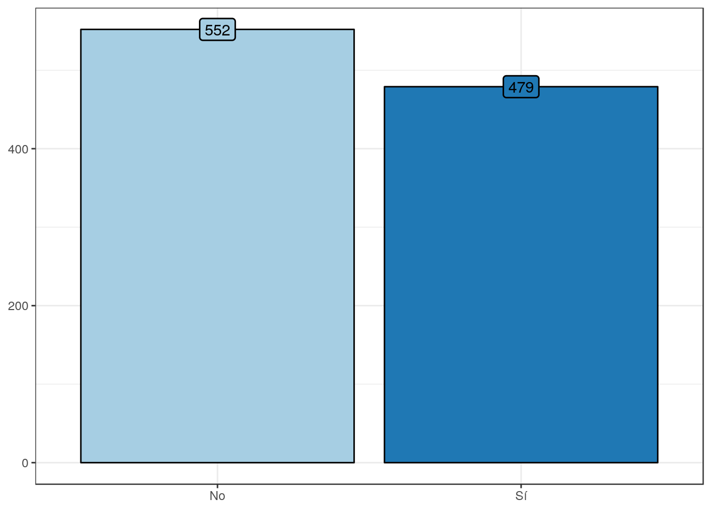
¿Se ha realizado alguna vez el Pap?
Tabla de Resumen
| No |
164 (16) |
| Sí |
867 (84) |
¿Hace cuantos meses se realizo por ultima vez el Pap?
Tabla de Resumen
| Media |
33.2 |
| Desviación estándar |
39.3 |
| Mediana |
24 |
| Rango intercuartilo |
24 |
| Mínimo |
0 |
| Máximo |
360 |
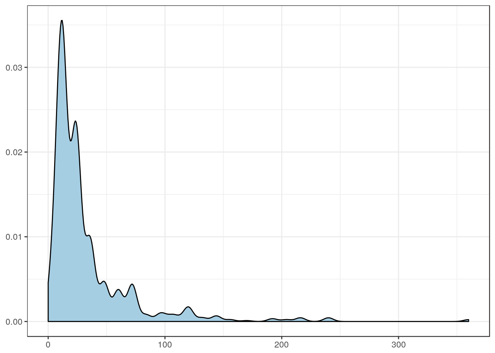
¿Cual fue el resultado previo de su Pap?
Tabla de Resumen
| Citología normal |
510 (61) |
| Otro resultado |
320 (39) |
Tabla de Resumen
| Cambios inflamatorios |
283 (88.4) |
| LIE de bajo grado |
22 (6.9) |
| Otro diagnóstico |
8 (2.5) |
| ASC-US |
4 (1.2) |
| LIE de alto grado |
3 (0.9) |
Edad de inicio de las relaciones sexuales
Tabla de Resumen
| Media |
18.3 |
| Desviación estándar |
2.6 |
| Mediana |
18 |
| Rango intercuartilo |
3 |
| Mínimo |
8 |
| Máximo |
30 |
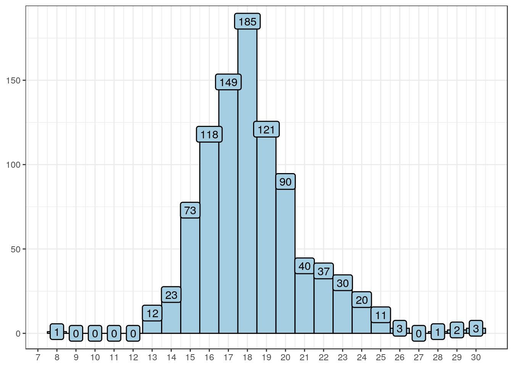
Numero de parejas sexuales
Tabla de Resumen
| Media |
3.2 |
| Desviación estándar |
2.5 |
| Mediana |
3 |
| Rango intercuartilo |
3 |
| Mínimo |
1 |
| Máximo |
30 |
Antecedente de enfermedad de transmisión sexual (ETS)
Tabla de Resumen
| No |
805 (88) |
| Sí |
105 (12) |
Antecedente de tabaquismo
Tabla de Resumen
| No |
807 (89) |
| Sí |
102 (11) |
Antecedente de ducha vaginal
Tabla de Resumen
| No |
792 (87) |
| Sí |
117 (13) |
Hallazgos colposcopicos
Calidad de la evaluacion
Tabla de Resumen
| Insatisfactoria |
497 (48) |
| Satisfactoria |
535 (52) |
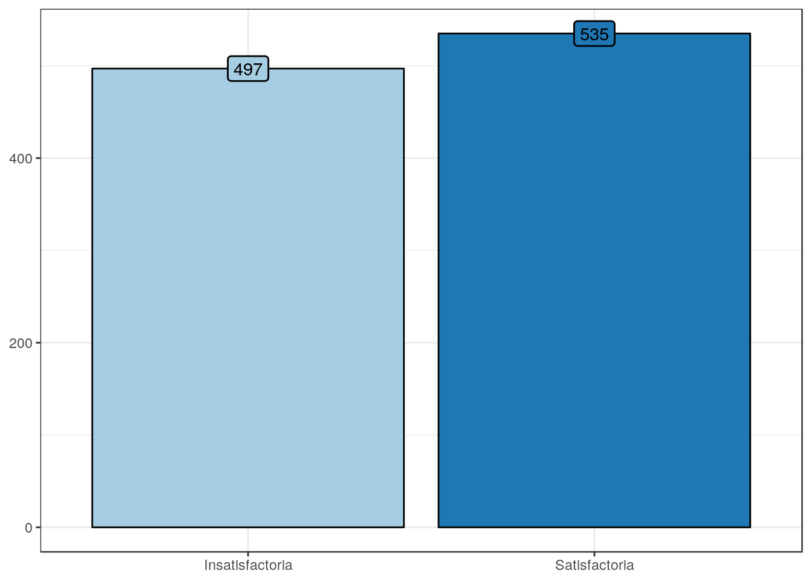
Motivo de evaluacion insatisfactoria
Tabla de Resumen
| UEC no visible |
493 (98.8) |
| Atrofia severa |
4 (0.8) |
| Inflamación severa |
2 (0.4) |
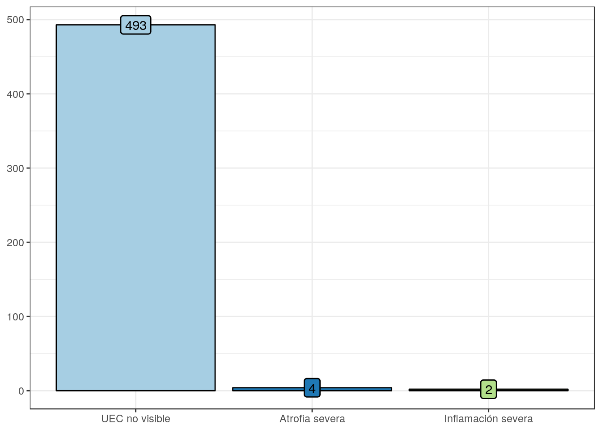
Evaluacion colposcopica
Tabla de Resumen
| Normales |
906 (87.8) |
| Anormales |
125 (12.1) |
| Sugestivas de cáncer |
1 (0.1) |
Hallazgos colposcopicos normales
Tabla de Resumen
| Epitelio escamoso normal |
105 (12) |
| ZT normal tipo 1 |
240 (26) |
| ZT normal tipo 2 |
188 (21) |
| ZT normal tipo 3 |
374 (41) |
Hallazgos colposcopicos anormales
Tabla de Resumen
| Epitelio aceto-blanco tenue |
45 (36) |
| Puntillado fino |
35 (28) |
| Zona de yodo parcialmente negativa |
17 (14) |
| Otros |
27 (22) |
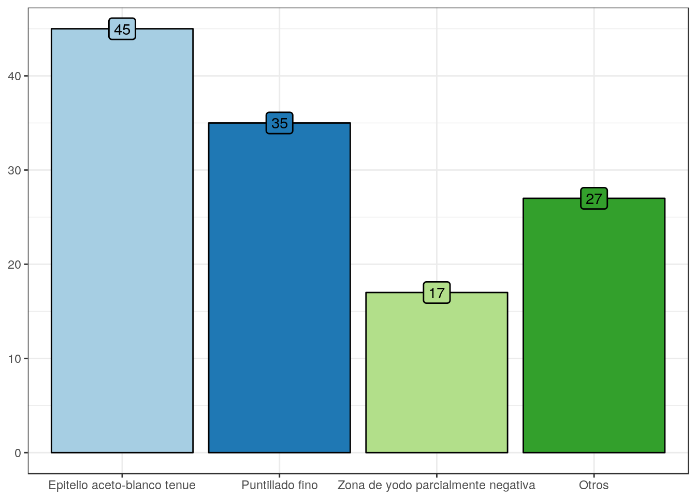
Tabla de Resumen
| Epitelio aceto-blanco tenue |
45 (36.3) |
| Puntillado fino |
35 (28.2) |
| Zona de yodo parcialmente negativa |
17 (13.7) |
| Mosaico fino |
14 (11.3) |
| Epitelio aceto-blanco denso |
8 (6.5) |
| Mosaico grueso |
3 (2.4) |
| Presencia de vasos atípicos |
1 (0.8) |
| Zona de yodo negativa |
1 (0.8) |
Indicaciones tras colposcopia
Tabla de Resumen
| Control en 12 meses |
623 (60) |
| Control en 6 meses |
297 (29) |
| Biopsia + LEC |
90 (9) |
| Otras |
22 (2) |
Hallazgos citologicos
Calidad del extendido citologico
Tabla de Resumen
| Insatisfactorio para evaluacion |
1 (0.1) |
| Satisfactorio para evaluación |
1032 (99.9) |
Categoria diagnostica del la citologia
Tabla de Resumen
| Anormalidades en células epiteliales |
28 (3) |
| Negativo para LIE o malignidad |
1004 (97) |
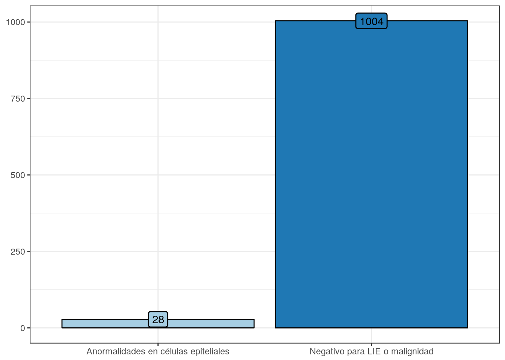
Hallazgos microbiologicos
Tabla de Resumen
| Actinomyces spp. |
3 (1) |
| Candida spp. |
4 (2) |
| Vaginosis bacteriana |
202 (97) |
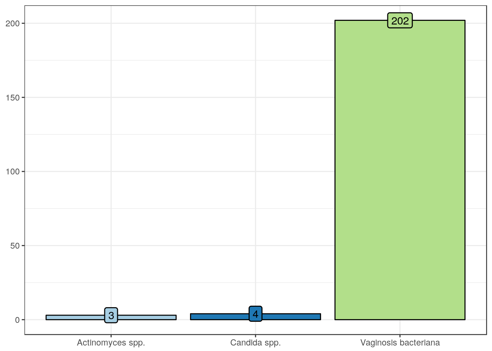
Hallazgos reactivos
Tabla de Resumen
| Atrofia |
58 (17) |
| Inflamación |
275 (83) |
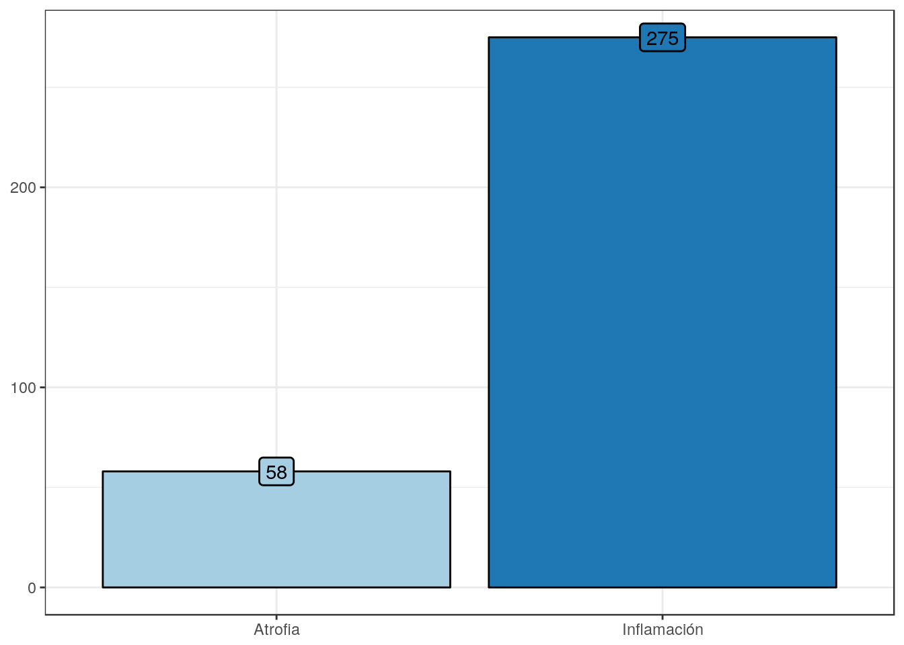
Anormalidades en celulas epiteliales
Tabla de Resumen
| ASC-US |
10 (33) |
| Carcinoma escamoso |
1 (3) |
| Células glandulares atípicas |
1 (3) |
| LIE de alto grado |
4 (13) |
| LIE de bajo grado |
14 (47) |
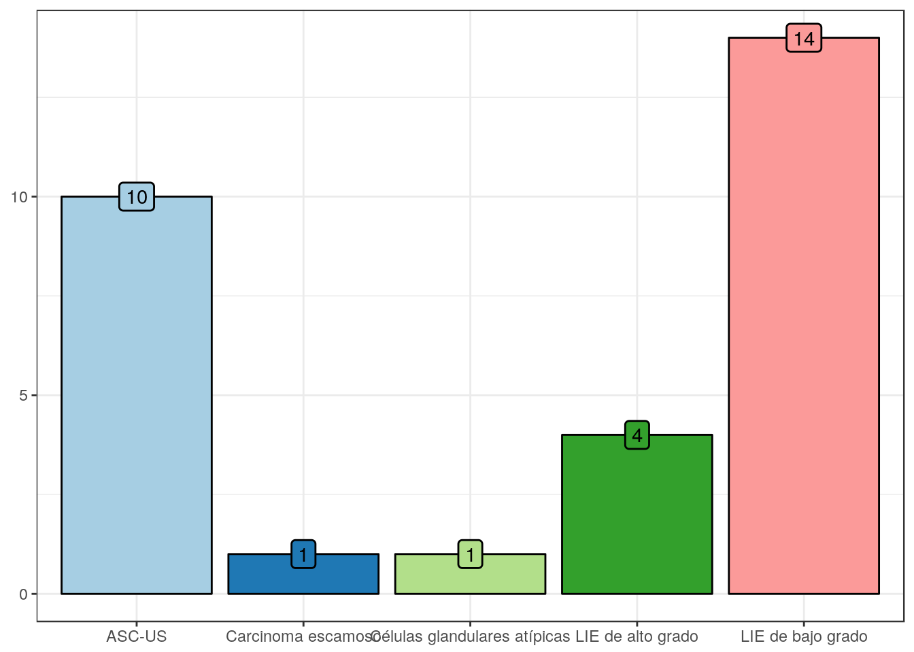
Indicaciones tras citologia
Tabla de Resumen
| Control en 12 meses |
542 (52.5) |
| Control en 6 meses |
453 (43.9) |
| Biopsia + LEC |
31 (3.0) |
| Repetir toma citológica |
3 (0.3) |
| Control en 3 meses |
2 (0.2) |
| LEEP |
1 (0.1) |
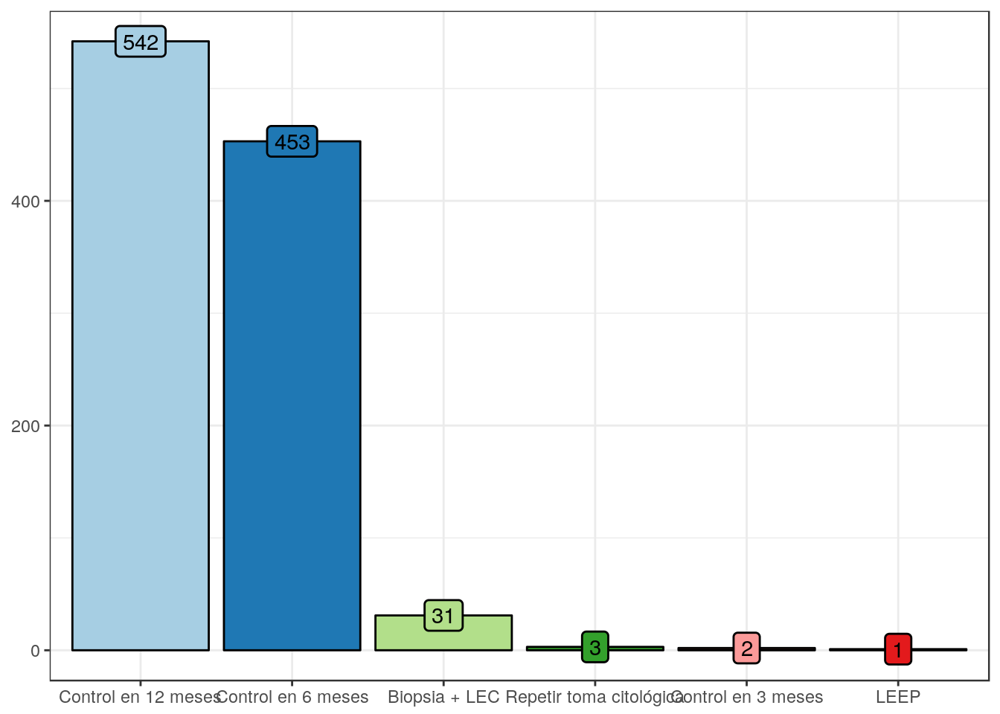
Hallazgos histopatologicos
Biopsia de cuello uterino + legrado endocervical
Tabla de Resumen
| Sí |
80 (8) |
| No |
953 (92) |
Diagnostico de la biopsia de cuello uterino
Tabla de Resumen
| LIE de bajo grado |
48 (60) |
| Cambios reactivos |
17 (21) |
| LIE de alto grado |
11 (14) |
| Carcinoma escamoso |
2 (2) |
| Adenocarcinoma |
1 (1) |
| Carcinoma in situ |
1 (1) |
Extension al canal endocervical
Tabla de Resumen
| Negativo |
68 (85) |
| No aplicable |
5 (6) |
| Positivo |
7 (9) |
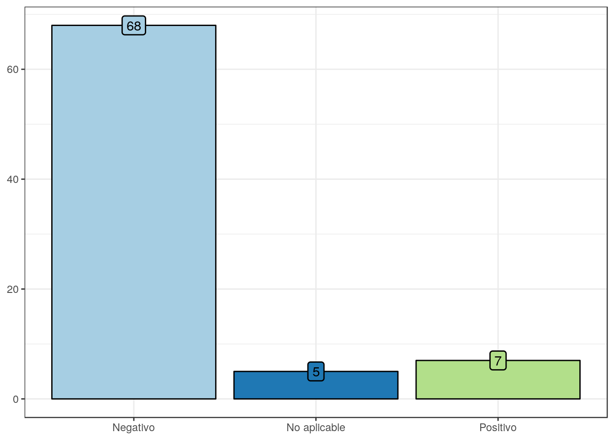
LEEP
Tabla de Resumen
| Sí |
50 (5) |
| No |
982 (95) |
Margen quirurgico del LEEP
Tabla de Resumen
| Negativo |
42 (84) |
| Positivo |
5 (10) |
| No evaluable |
3 (6) |